Comunicadora Visual · Buenos Aires
Estrategia digital 360° con sensibilidad fotográfica. Ver lo que otros no ven — y convertirlo en contenido que conecta marcas con personas reales.
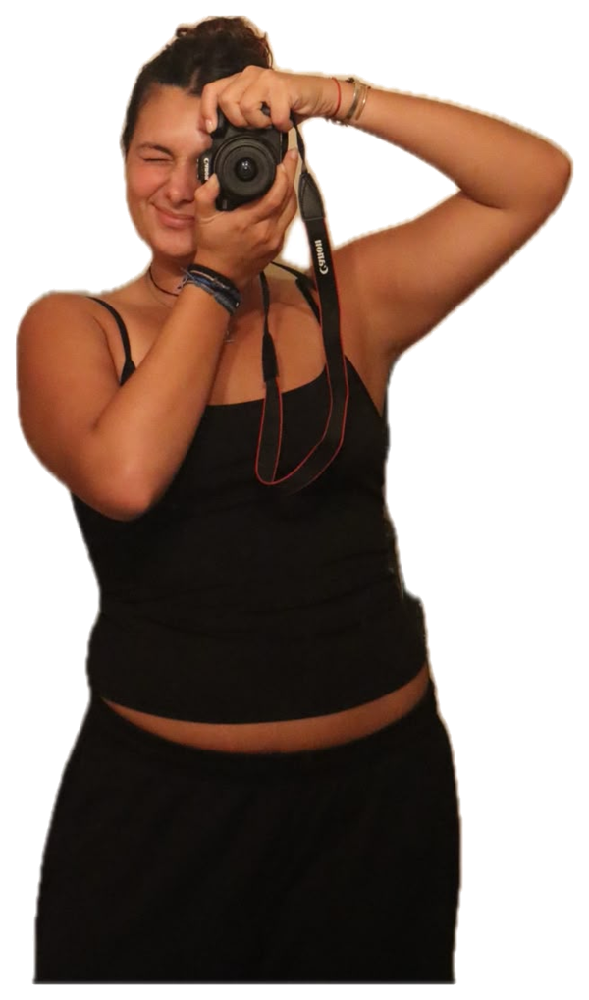
lo-que-hago/
scrolleá y hacela girar ↷
Sobre mí
hola, soy yo ↘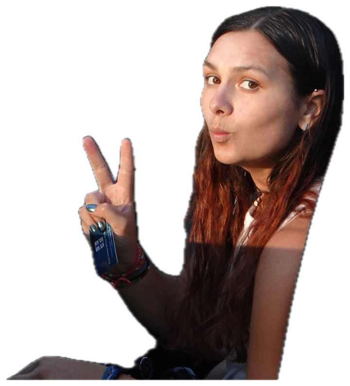
Soy Guillermina Joaquin, pero muchos me conocen como Pepa. Comunicadora Digital formada en la UCA, con experiencia en fotografía y producción de contenido visual, estrategia digital y community management, y producción audiovisual — del podcast al cortometraje documental.
Mi filosofía se centra en la palabra foto: no busco capturar un objeto en sí, sino lo que pasa a su alrededor. Esa observación profunda transforma una pieza de comunicación en algo que la gente siente.
números que hablan solos ↴
Todos los días busco conocer algo nuevo. Cuanto más amplíe mi mundo, más le puedo mostrar al resto.
Casos de éxito
abrí cada carpeta ↴
pasan solas · tocá una pestaña para saltar ↓
en-progreso/ 3 archivos
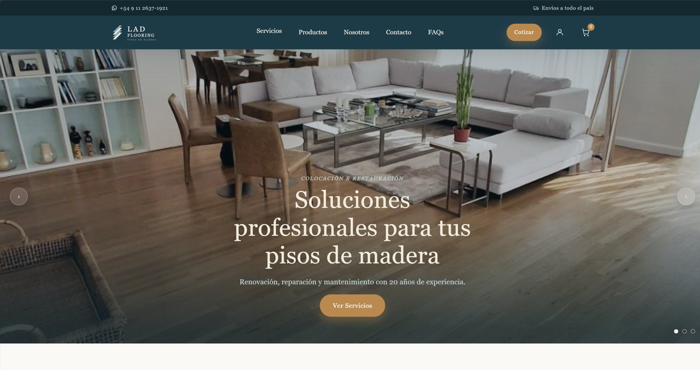
Sitio web y tienda online para una empresa de colocación y restauración de pisos de madera. Diseño, desarrollo y organización de contenidos: servicios, productos, cotizador y FAQs.
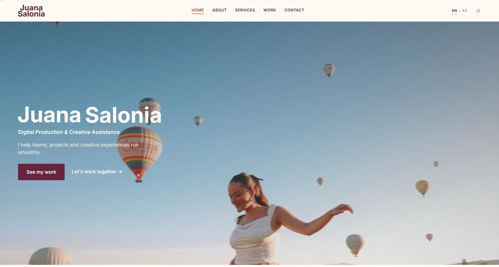
Portfolio web bilingüe para una profesional de producción digital y asistencia creativa. Diseño y desarrollo del sitio, con secciones de perfil, servicios, trabajos y contacto.
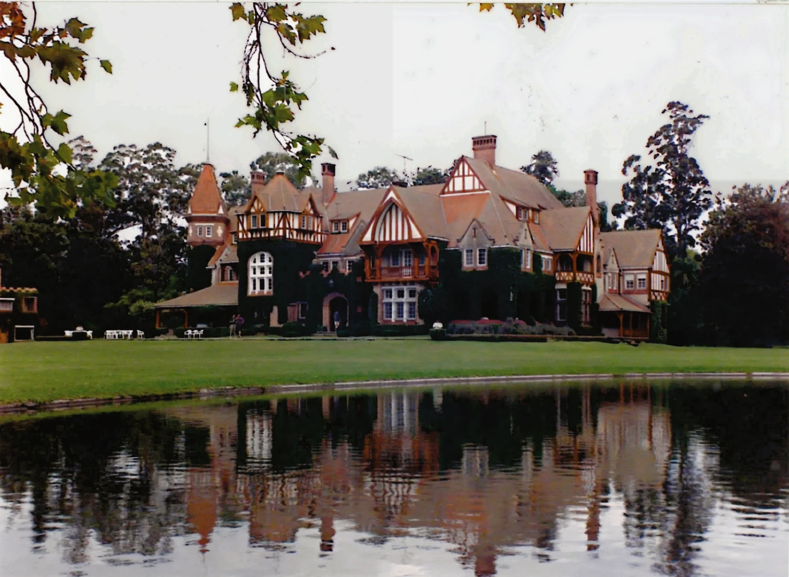
Pieza audiovisual para Estancia Villa María: rodaje y edición de un video que retrata el lugar, su paisaje y su atmósfera.
casos/ 6 archivos
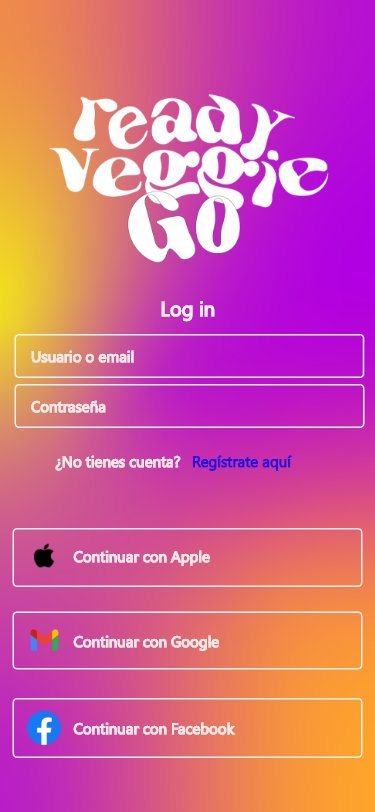
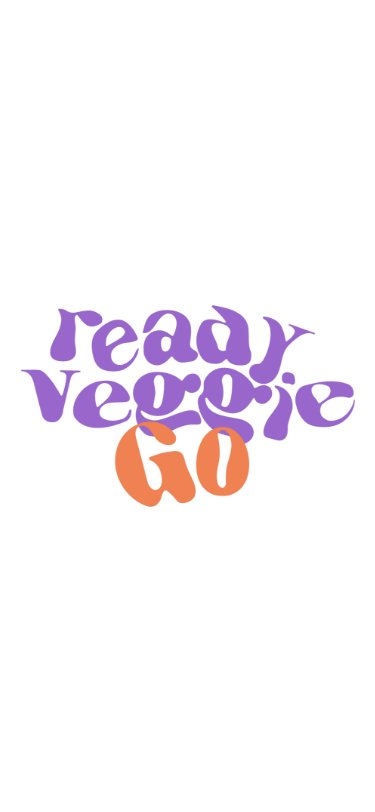
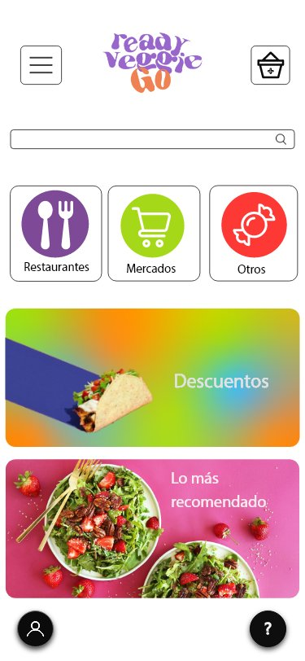
App de delivery 100% plant-based, proyecto de la facultad. Desarrollamos la marca completa y prototipamos la app, del login al seguimiento del pedido.
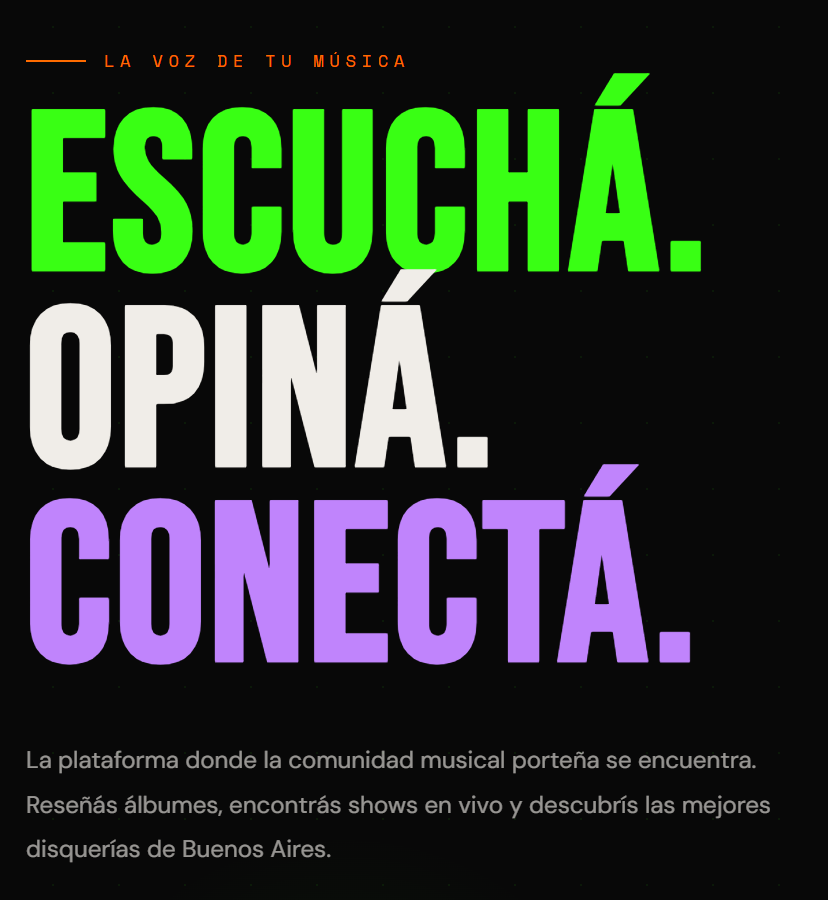
Proyecto integral de principio a fin: idea, identidad de marca y desarrollo web para una plataforma pensada para la comunidad musical porteña.
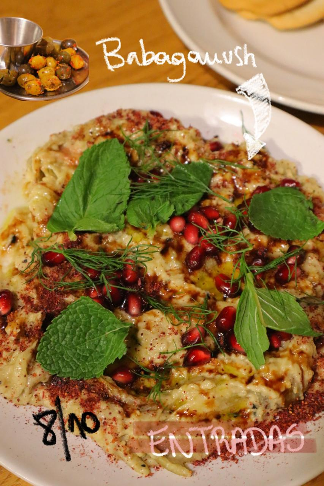
Proyecto integral de comunicación nacido en Madrid. Identidad visual desde cero, estrategia, copywriting y community management para argentinos en la diáspora.
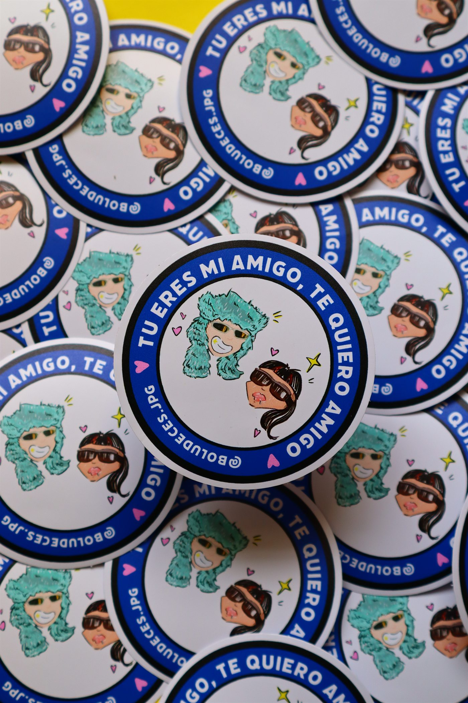
Banco de imágenes para emprendimiento de ilustraciones. Fotografía de producto y conceptual que captura la personalidad creativa de la marca.
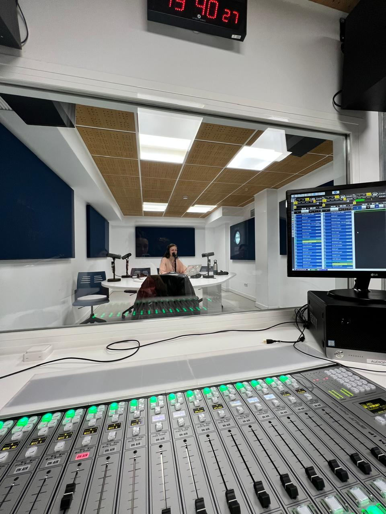
Live broadcast de 45' + podcast editado de 10'. Operación de mixer, guion y edición con narrativa intercultural. UFV Madrid, 2025.
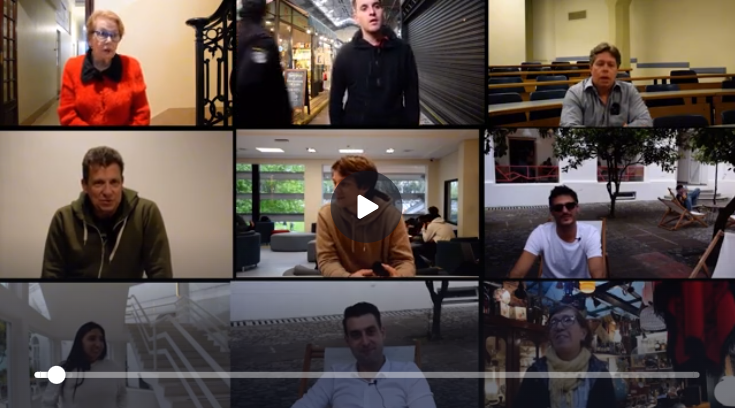
Cortometraje documental con producción integral: ideación, scouting, entrevistas y edición narrativa. Del guion a la pantalla — UCA · 2023.
Servicios
Pensados para equipos de contenido, estudios de producción y marcas que quieren comunicar con intención y ADN cultural real.
01
Estrategias digitales con ADN cultural. Narrativas que conectan con audiencias reales, con foco en comunidades orgánicas y engagement medible.
02
Fotografía y dirección de arte que conecta emocionalmente. De la conceptualización al retoque final, con una mirada que entiende el alma detrás del producto.
03
Producción integral audiovisual del guion a la post-producción técnica. Podcasts, documentales y videos de marca con narrativa de largo aliento.
04
Sitios y tiendas online pensados desde la comunicación: identidad, contenidos y navegación claros para que la marca se entienda en segundos.
Futuras colaboraciones
hacia dónde voy ↷Mi objetivo es aplicar esta mirada estratégica y sensible en entornos donde la cultura auditiva y visual se fusionan — aportando una visión 360° que entiende el alma detrás de cada track y cada historia.